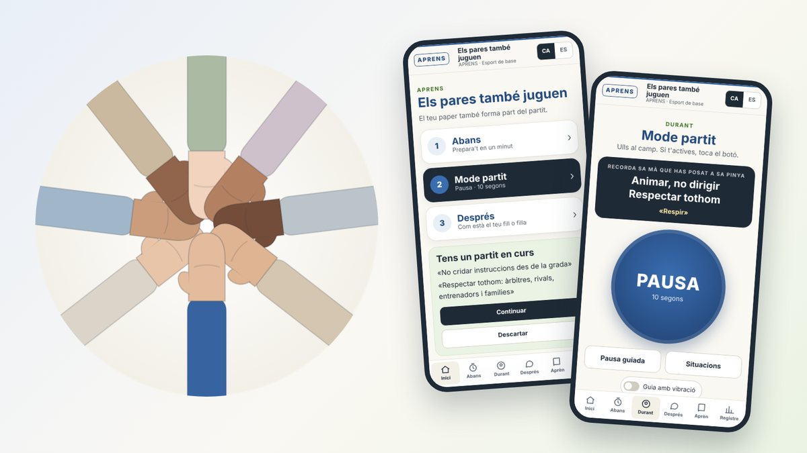

El meu club és un lloc emocionalment segur
Presentam una proposta d'APRENS per a clubs esportius de base, de futbol i d'altres disciplines, pensada perquè famílies, entrenadors i directius tenguin un paper actiu en l'educació dels nostres jugadors i jugadores, i perquè el club sigui per a ells un lloc emocionalment segur.

Fa anys que faig feina amb esportistes joves, amb les seves famílies i amb els seus entrenadors, i per mi l'esport de base és un dels contextos on més es pot ajudar un nin o una nina a créixer, a nivell físic, emocional i com a persona. A més de la tècnica, la tàctica i la preparació física, a cada entrenament i a cada partit s'aprenen coses que duren tota la vida:
- Respecte
- Esforç
- Tolerància a la frustració
- Orientació a la tasca
- Cooperació
- Comunitat
Aquests aprenentatges depenen en bona part dels adults que envolten el jugador. No només de les nostres actituds a la grada o a la banqueta, sinó també de la manera com el club planteja els equips: si fomenta l'amistat, la confiança i la pertinença, si els diferents equips no són illes separades i si cap nivell no és el dels millors ni el dels pitjors, sabent que moltes vegades és el ritme de creixement el que marca el nivell d'avui.
Un jugador d'èxit no és només el que arriba a viure de l'esport. És el que hi pot jugar gran part de la vida, amb amistats, vivències i el sentiment de pertànyer a un lloc.
Salut i rendiment van junts
La idea que ho travessa tot és que la salut esportiva no és incompatible amb el rendiment: les mateixes habilitats que protegeixen l'esportista (una atenció més lliure, la capacitat de tornar després d'una errada, la motivació orientada a aprendre) són les que poden sostenir el seu rendiment a llarg termini. No es tracta de no enfadar-se mai, ni a la grada ni a la banqueta, sinó d'aprendre a reconèixer el que sentim, acompanyar-ho i elegir com actuam, de manera que l'al·lot no hagi de carregar amb les emocions dels adults.
Què ofereix la proposta
- L'app «Els pares també juguen», per a famílies i entrenadors, en català i en castellà. Acompanya els tres moments del partit en pocs tocs, perquè els ulls estiguin al camp i no al mòbil: preparar-se abans, una pausa breu quan el partit ens activa i una manera d'acompanyar el jugador després. Inclou «la pinya de les famílies», un gest voluntari de compromís abans de cada partit, i continguts per aprendre sobre atenció, motivació i comunitat. No demana cap registre i el que s'hi anota queda només al mòbil de cada persona.
- Una guia de treball psicològic per al club, amb mòduls per a famílies, entrenadors, jugadors i club, un pla de temporada, guions de sessió i fitxes per fotocopiar.
- Acompanyament i formació: reunió amb les famílies, tallers per als entrenadors, microsessions d'atenció dins els entrenaments i seguiment al llarg de la temporada.
- Adaptada a cada club: amb el seu escut, els seus colors, el seu codi de conducta i el seu protocol de protecció de menors, i amb un cartell i un QR per a la grada i el vestidor.
Està pensada inicialment per al futbol, però el plantejament és vàlid per a qualsevol esport d'equip o individual en les etapes de la infància i l'adolescència, i l'adaptam a cada disciplina.
Una primera experiència
Ara volem començar amb una primera experiència amb clubs col·laboradors, per veure com funciona de veritat dins el dia a dia d'un equip i millorar-la amb el que hi trobem. Si sou d'un club i us agradaria fer-ho amb nosaltres, o només en voleu saber més, en parlam amb molt de gust.
Aquesta proposta no és un tractament psicològic ni substitueix les normes de convivència del club ni el seu protocol de protecció de menors: és un recurs educatiu i d'entrenament per fer, entre tots, un entorn més segur, respectuós i educatiu per als nostres jugadors i jugadores.
Els materials en què es basa: Els pares també juguen, La piràmide del rendiment i Atenció i maneig emocional a l'esport.
Quota per al club
La quota és de 250 € per temporada (setembre a juny), equivalent a 25 € al mes, o 225 € si el club ho abona en un sol pagament a l'inici de temporada. És per club, no per equip, perquè totes les categories hi puguin fer feina, i inclou l'app amb l'espai propi del club, els cartells amb el QR, els missatges de difusió, la guia, les actualitzacions i el suport durant la temporada. El treball presencial es pressuposta a part, i sempre es pot començar amb un pilot gratuït de quatre a sis setmanes amb un equip. Molts ajuntaments, el Consell de Mallorca i algunes federacions tenen ajudes per a aquest tipus de formació; si cal, preparam un pressupost formal perquè el club el pugui presentar.
Si en voleu parlar: APRENS Psicologia · C/ Mare de Déu de l'Esperança, 70, 2n · Inca · 636 93 76 61 · info@aprens.es
Tòfol Villalonga
Mi club es un lugar emocionalmente seguro
Presentamos una propuesta de APRENS para clubes deportivos de base, de fútbol y de otras disciplinas, pensada para que familias, entrenadores y directivos tengan un papel activo en la educación de nuestros jugadores y jugadoras, y para que el club sea para ellos un lugar emocionalmente seguro.
Hace años que trabajo con deportistas jóvenes, con sus familias y con sus entrenadores, y para mí el deporte base es uno de los contextos donde más se puede ayudar a un niño o a una niña a crecer, a nivel físico, emocional y como persona. Además de la técnica, la táctica y la preparación física, en cada entrenamiento y en cada partido se aprenden cosas que duran toda la vida:
- Respeto
- Esfuerzo
- Tolerancia a la frustración
- Orientación a la tarea
- Cooperación
- Comunidad
Estos aprendizajes dependen en buena parte de los adultos que rodean al jugador. No solo de nuestras actitudes en la grada o en el banquillo, sino también de la manera en que el club plantea los equipos: si fomenta la amistad, la confianza y la pertenencia, si los distintos equipos no son islas separadas y si ningún nivel es el de los mejores ni el de los peores, sabiendo que muchas veces es el ritmo de crecimiento el que marca el nivel de hoy.
Un jugador de éxito no es solo el que llega a vivir del deporte. Es el que puede jugar gran parte de la vida, con amistades, vivencias y el sentimiento de pertenecer a un lugar.
Salud y rendimiento van juntos
La idea que lo atraviesa todo es que la salud deportiva no es incompatible con el rendimiento: las mismas habilidades que protegen al deportista (una atención más libre, la capacidad de volver después de un error, la motivación orientada a aprender) son las que pueden sostener su rendimiento a largo plazo. No se trata de no enfadarse nunca, ni en la grada ni en el banquillo, sino de aprender a reconocer lo que sentimos, acompañarlo y elegir cómo actuamos, de manera que el chico o la chica no tenga que cargar con las emociones de los adultos.
Qué ofrece la propuesta
- La app «Los padres también juegan», para familias y entrenadores, en catalán y en castellano. Acompaña los tres momentos del partido en pocos toques, para que los ojos estén en el campo y no en el móvil: prepararse antes, una pausa breve cuando el partido nos activa y una manera de acompañar al jugador después. Incluye «la piña de las familias», un gesto voluntario de compromiso antes de cada partido, y contenidos para aprender sobre atención, motivación y comunidad. No pide ningún registro y lo que se anota queda solo en el móvil de cada persona.
- Una guía de trabajo psicológico para el club, con módulos para familias, entrenadores, jugadores y club, un plan de temporada, guiones de sesión y fichas para fotocopiar.
- Acompañamiento y formación: reunión con las familias, talleres para los entrenadores, microsesiones de atención dentro de los entrenamientos y seguimiento a lo largo de la temporada.
- Adaptada a cada club: con su escudo, sus colores, su código de conducta y su protocolo de protección de menores, y con un cartel y un QR para la grada y el vestuario.
Está pensada inicialmente para el fútbol, pero el planteamiento es válido para cualquier deporte de equipo o individual en las etapas de la infancia y la adolescencia, y la adaptamos a cada disciplina.
Una primera experiencia
Ahora queremos empezar con una primera experiencia con clubes colaboradores, para ver cómo funciona de verdad en el día a día de un equipo y mejorarla con lo que encontremos. Si sois de un club y os gustaría hacerlo con nosotros, o solo queréis saber más, hablamos con mucho gusto.
Esta propuesta no es un tratamiento psicológico ni sustituye las normas de convivencia del club ni su protocolo de protección de menores: es un recurso educativo y de entrenamiento para hacer, entre todos, un entorno más seguro, respetuoso y educativo para nuestros jugadores y jugadoras.
Los materiales en los que se basa (en catalán): Els pares també juguen, La piràmide del rendiment y Atenció i maneig emocional a l'esport.
Cuota para el club
La cuota es de 250 € por temporada (septiembre a junio), equivalente a 25 € al mes, o 225 € si el club la abona en un solo pago al inicio de la temporada. Es por club, no por equipo, para que todas las categorías puedan trabajar con ella, e incluye la app con el espacio propio del club, los carteles con el QR, los mensajes de difusión, la guía, las actualizaciones y el apoyo durante la temporada. El trabajo presencial se presupuesta aparte, y siempre se puede empezar con un piloto gratuito de cuatro a seis semanas con un equipo. Muchos ayuntamientos, el Consell de Mallorca y algunas federaciones tienen ayudas para este tipo de formación; si hace falta, preparamos un presupuesto formal para que el club pueda presentarlo.
Si queréis hablarlo: APRENS Psicologia · C/ Mare de Déu de l'Esperança, 70, 2.º · Inca · 636 93 76 61 · info@aprens.es
Tòfol Villalonga